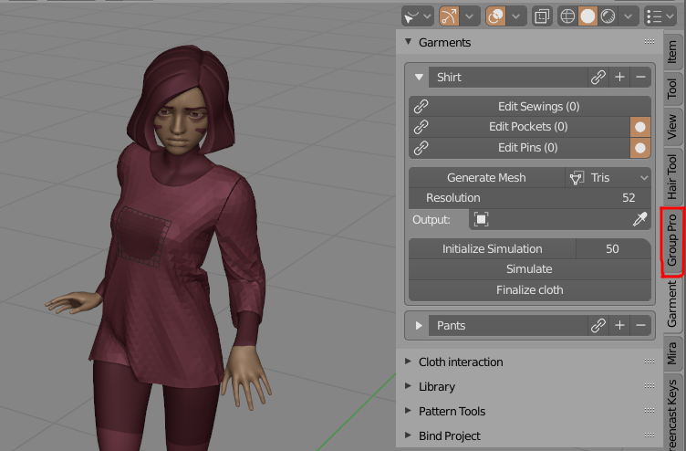
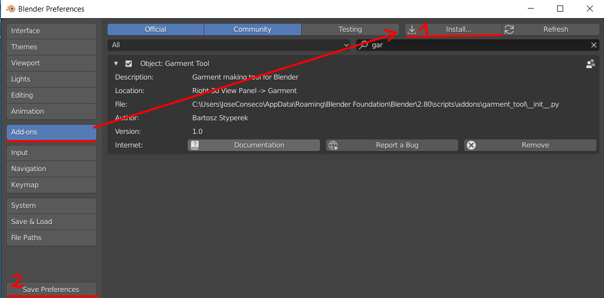

Garment Maker Documentation#
Garment Maker is Blender addon designed to simplify process of generating cloth sewing patterns directly inside Blender. Sewing patterns are made from 2d bezier curves, and can be converted to triangulated mesh object for simulation with blender build-in cloth sim. The Garment Maker panel location: * 3D Viewport -> right Sidebar (N) -> Garment Maker Tab.

Features#
Main addon features are:
- defining sewings between sewing patterns (2d bezier curves), directly in 3d viewport, .
- converting those curves to evenly triangulated mesh with adjustable resolution
- Pin tool for generating custom stitches (useful for buttons)
- Pocket tool for projecting sewings, from one patterns to target
- easy way of projecting 3d mesh, on surface of simulated cloth (useful for making attachments, bags, pockets, etc.)
- helpers for symmetrize, splitting, duplicating, flipping 2d curve sewing patterns.
- saving baked simulation into shape-key
Limitations#
- No interaction with simulated cloth in Blender
- Rarely but it happens that triangulation fails to find solution for given sewing pattern. Usually increasing triangulation resolution parameters fixes that.
Installation#

Edit → User Preferences → Add-ons tab, press 'Install' button, in bottom bar.
Remember to press 'Save Preferences', so that addon stays enabled after restarting blender.
When you are updating addon, usually it is good to remove old version by using 'Remove' button (visible on image above), before installing new version.